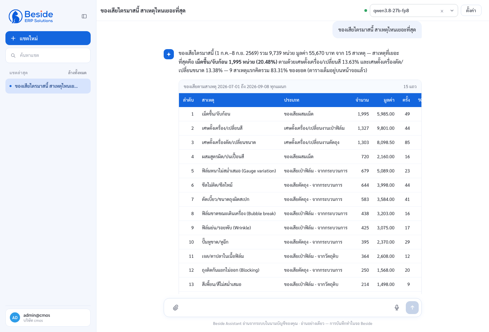
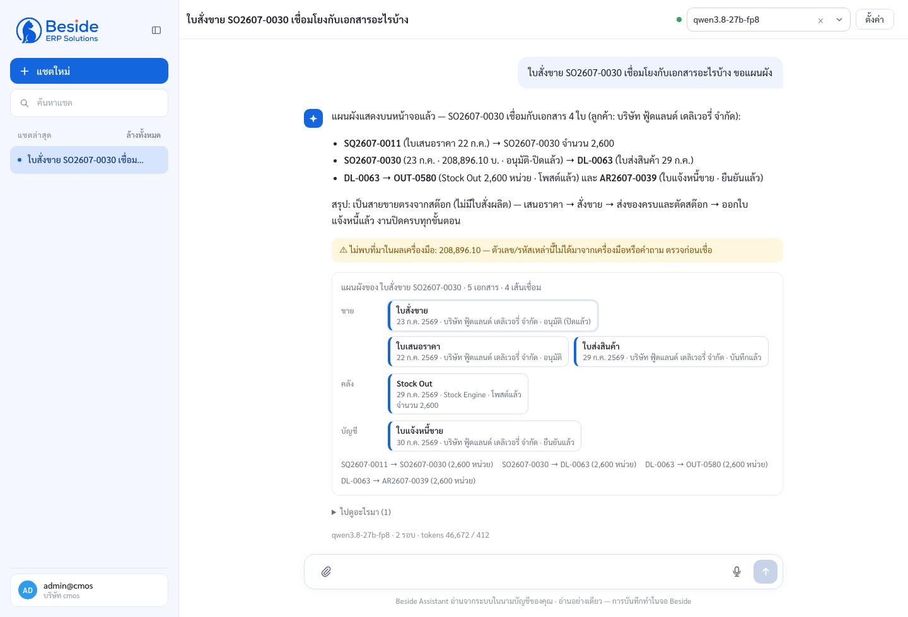
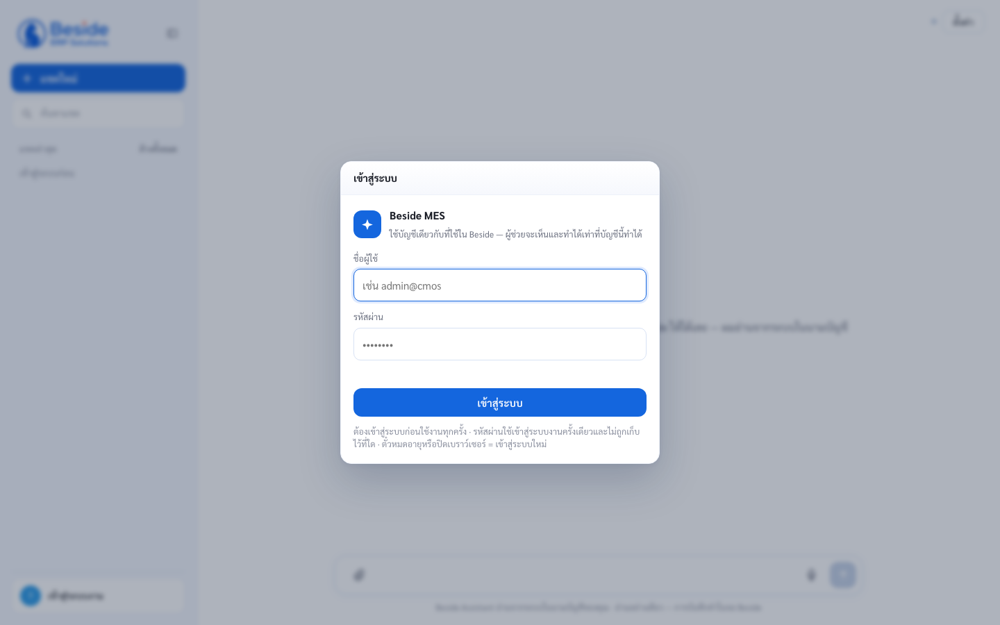
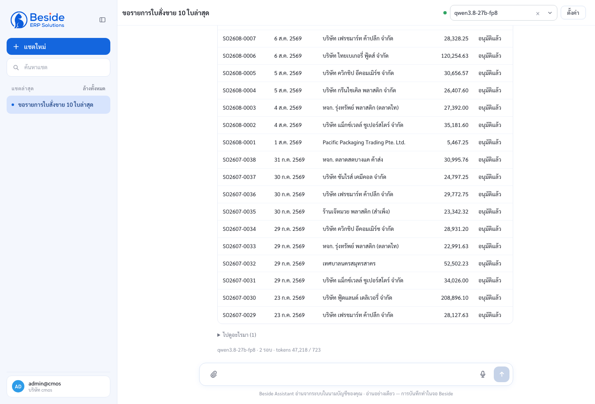
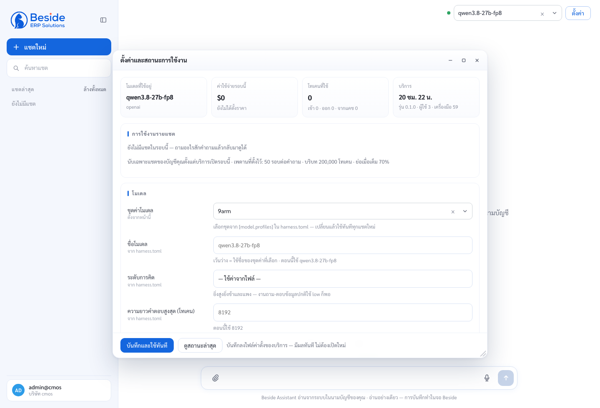

ผู้ช่วย AI ที่ต่อกับ Beside
เรามีอะไรแล้ว และมันทำงานอย่างไร
ชุดนี้อธิบาย แนวคิดและวิธีทำงานของระบบ · ความรู้เรื่อง AI ที่ต้องมีก่อนแก้โค้ด · การเชื่อมต่อ
แล้วปิดด้วย สิ่งที่ทำเสร็จแล้ว ข้อจำกัดที่รู้ และวิธีรับงานต่อ — อ่านจบแล้วลงมือแก้โค้ดได้
วาระและวิธีอ่าน
- คนรับงาน แก้เครื่องมือหนึ่งตัวได้เองภายในวันแรก โดยไม่ต้องถาม
- เข้าใจว่าทำไมบางอย่างจงใจไม่ทำ (เขียนลง Beside · ให้ AI ตัดสินใจแทนคน)
- รู้ว่าตัวเลขทุกตัวในเด็คนี้มาจากไหน และรันซ้ำเองได้
ทำไมต้องมี harness และทำไมเขียนเอง
โจทย์: ให้คนหน้างานถามระบบเป็นภาษาคน แล้วได้คำตอบจากข้อมูลจริงของบริษัทตัวเอง — ไม่ใช่แชตบอตความรู้ทั่วไป และไม่ใช่ AI ที่กดบันทึกแทนคน
| ทางเลือก | ทำไมไม่เลือก |
|---|---|
| ใช้ framework เอเจนต์สำเร็จรูป | คุมไม่ได้ว่าอะไรถูกส่งเข้าโมเดล · เพิ่มรั้วของเราเองไม่ได้ |
| ให้แกนรู้จัก Beside โดยตรง (import โค้ดตัวเชื่อมเข้าโปรเซสเดียวกัน) | มีระบบที่สองเมื่อไร แกนต้องแก้ทุกครั้ง · ทดสอบแยกไม่ได้ |
| รันโมเดลในเครื่องอย่างเดียว | วัดแล้ว: เรียกเครื่องมือไม่เป็น/ช้า — แต่เปิดทางไว้ (สไลด์ 11) |
| RAG ค้นคู่มือ | คำถามจริงคือ “ของเหลือเท่าไร” “ใบนี้ถึงไหน” — ต้องการข้อมูลสด |
| ให้ AI เขียน/บันทึกเอกสารเอง | ผิดแล้วไม่มีใครเห็น — จบที่ “เปิดจอพร้อมค่าให้คนกด” แทน (สไลด์ 21) |
· ทางเดียวที่แกนคุยกับระบบงานคือ MCP
· ความรู้โดเมนอยู่ใน skills + resources ที่เปิดอ่านเมื่อเกี่ยว
· รั้วคือ ตารางสิทธิ์ + hook + เทสต์ ไม่ใช่ประโยคขอร้องใน prompt
ระบบประกอบด้วยอะไร และข้อมูลวิ่งทางไหน
โมเดลภาษาทำงานอย่างไร เท่าที่คนแก้โค้ดต้องรู้
| คำ | หมายถึง / เจอที่ไหน |
|---|---|
| token (โทเคน) | หน่วยย่อยของข้อความ · ไทยกินมากกว่าอังกฤษ 2–3 เท่า · เห็นตัวนับในหน้า “สถานะการใช้งาน” |
| context window | เพดานโทเคนต่อครั้ง · ตั้งได้ที่ [limits] ใน harness.toml |
| system prompt | คำสั่งถาวรของผู้ช่วย — harness/src/harness/prompts/system.md (จงใจให้สั้นกว่า 150 บรรทัด) |
| tool_use / tool_result | คู่ “ขอเรียกเครื่องมือ” และ “ผลที่ได้” — ดูด้วย harness replay |
| prompt caching | ส่วนหัวที่ซ้ำถูกเก็บไว้ รอบถัดไปถูกและเร็วขึ้น · ของเราวัดได้ 66–90% |
| effort / reasoning | ระดับ “คิดก่อนตอบ” ของโมเดลบางรุ่น — ปรับได้ในหน้าตั้งค่าของคอนโซล |
| hallucination | ตอบเนียนแต่ไม่จริง · รั้วคือตัวตรวจที่มา ไม่ใช่การกำชับในprompt |
โมเดลคือ CPU ไม่ใช่โปรแกรม ทั้งระบบมี loop เดียว
เราไม่ได้เขียน “ถ้าผู้ใช้ถามเรื่องสต๊อก ให้เรียกเครื่องมือ A แล้ว B” ไว้ที่ไหนเลย — เราให้เครื่องมือกับกติกา แล้วปล่อยให้โมเดลเลือกลำดับเอง วนจนกว่าจะตอบได้
- ไม่ลองใหม่ด้วย prompt ที่ต่างออกไป เมื่อโมเดลตอบไม่เข้าท่า — ผลจะไม่ซ้ำและตรวจไม่ได้
- ไม่เดาเจตนาให้ผู้ใช้ · ถ้ากำกวมต้องถามกลับ (เครื่องมือ ask_user)
- ไม่แก้คำตอบของโมเดล · ถ้าเลขไม่มีที่มาก็ติดป้ายเตือน ไม่ใช่ลบทิ้งเงียบ ๆ
- ไม่ให้โมเดลตรวจงานตัวเองในข้อความเดียวกัน — ผลการตรวจต้องมาจากเทสต์/hook ที่รันจริง
| งบ | ตั้งที่ | ทำอะไรเมื่อชน |
|---|---|---|
| จำนวนรอบสูงสุด | [limits] | หยุดแล้วบอกว่าหยุดเพราะอะไร |
| เวลารวม | [limits] | เดียวกัน · exit code 3 ในโหมด CLI |
| โทเคนรวม | [limits] | เดียวกัน |
| เรียกเครื่องมือซ้ำเดิม | ในโค้ด loop | กันวนติดหลุมเดิม |
| เวลาต่อการเรียกเครื่องมือ | ตัวเชื่อม | 90 วินาที รวมทุก retry (แก้ในรอบ 10.19) |
Tool use — โมเดลสั่งงานโค้ดเราอย่างไร
{
"name": "stock_balance",
// โมเดลอ่านบรรทัดนี้เพื่อตัดสินใจ — สำคัญที่สุด
"description": "ยอดคงเหลือปัจจุบันของสินค้าเทียบขั้นต่ำ/
ขั้นสูง ทั้งคลังหรือเจาะสินค้า ใช้เมื่อผู้ใช้ถามว่า
ของเหลือเท่าไร ไม่ใช้เมื่อต้องการการเดินสต๊อกทีละ
บรรทัด (ใช้ stock_ledger แทน)",
"input_schema": { ...JSON Schema ของอาร์กิวเมนต์... },
"annotations": {
"readOnlyHint": true, // อ่านอย่างเดียวจริงไหม
"destructiveHint": false,
"openWorldHint": false // ออกอินเทอร์เน็ตไหม
}
}
Context engineering ส่งอะไรเข้าโมเดล และเรียงอย่างไร
ในบริบท (ทุกรอบ · ราคาถูก): beside: กติกาเลือกเครื่องมือของระบบงาน Beside python-testing: วิธีเขียนเทสต์ในโปรเจกต์นี้ เมื่อโมเดลเห็นว่าเกี่ยว มันเรียกเอง: read skills/beside/SKILL.md read mcp://beside/knowledge/doc-types
| สิ่งที่วัด | ตัวเลข | ทำอะไรต่อ |
|---|---|---|
| สัดส่วนเวลาที่หมดไปกับ “รอโมเดล” | 95% | เวลาเครื่องมือรวมกันแค่ 0.5 วิ — ต้องลดจำนวนรอบ ไม่ใช่ปรับ API ให้เร็วขึ้น |
| โมเดลเสียรอบไปเปิดอ่าน SKILL.md | 27 / 82 | ย้ายตารางตัดสินใจไปฝากมากับ MCP ตั้งแต่ตอนต่อ — ไม่ต้องเสียรอบอ่านอีก |
| คำสั่ง “เปิดหน้า SO” เดิมใช้ | 5 รอบ | ยุบเป็นเครื่องมือเดียว open_screen → เหลือ 1 รอบ |
ย่อความ ไม่ตัดทิ้ง และเมื่อไรควรแยกผู้ช่วยลูก
| ตั้งที่ | ผล |
|---|---|
| [limits] context_window | เพดานที่ใช้ตัดสินว่าเมื่อไรควรย่อ — ตั้งเล็ก ๆ เพื่อทดสอบ compaction ได้ |
| [model] compaction_name | โมเดลที่ใช้ย่อ (ตั้งใจให้เป็นตัวเล็กและถูก) |
| prompts/compaction.md | สั่งว่าสรุปแล้วต้องเก็บอะไรไว้ — แก้ตรงนี้เมื่อพบว่าผู้ช่วยลืมเรื่องสำคัญ |
- ใช้เครื่องมือชุดเดียวกัน ยกเว้นการเปิดผู้ช่วยลูกซ้อน (กันระเบิดเป็นทอด ๆ)
- ในคอนโซล ผู้ช่วยลูกไม่มี ask_user และ remember — ผู้ช่วยลูกไม่คุยกับผู้ใช้และไม่จดความจำ
- transcript แยกไฟล์แต่ผูกกับรอบแม่ ตามกลับได้
โมเดลพลาดแบบไหน รั้วอยู่นอกโมเดลทั้งหมด
| อาการ | รั้วของเรา | หลักฐานว่ารั้วทำงาน |
|---|---|---|
| แต่งตัวเลข อันตรายสุด | เทียบตัวเลขในคำตอบกับผลเครื่องมือทั้งเซสชัน ไม่พบ = ติดป้าย ⚠ ไม่พบที่มา | ชุด eval Beside 38 โจทย์ — ไม่ติดป้ายเลยสักข้อ |
| ข้อความแทรกคำสั่ง ในไฟล์ที่แนบ | เนื้อหาภายนอกเป็น “ข้อมูล” · ด่านสิทธิ์ยังถามอยู่ · โมเดลต้องรายงานเมื่อเจอ | โจทย์ eval ฝัง injection จริง — ไม่ทำตาม + รายงานทุกครั้ง |
| อ้างว่าทำให้แล้ว | ไม่มีเครื่องมือเขียนตั้งแต่แรก + กติกาบังคับให้บอกว่าต้องไปทำที่จอไหน | โจทย์สั่งเขียน 10 ข้อ — ปฏิเสธถูก 10/10 |
| รายงานสำเร็จทั้งที่ไม่สำเร็จ | รอสัญญาณตอบรับจริงจากจอ · ไม่ได้ยิน = บอกว่าเปิดไม่ได้พร้อมเหตุผล | ยิงสดเทียบสองพอร์ต — เดิมขึ้นว่า “เปิดให้แล้ว” ทั้งที่ผู้ใช้เห็นหน้าล็อกอิน |
| ยิงซ้ำวนเปล่า | แปลข้อความกำกวมของปลายทางเป็นรหัสที่บอกว่า อย่าลองใหม่ | พบจริง 3 รายงาน — แก้แล้วโมเดลเลิกวน |
| ตอบจากข้อมูลที่ถูกตัด | ซองผลลัพธ์บังคับให้มียอดจริงและสถานะการตัด | รอบ 10.16 เจอ 3 จุดที่พูดเลขหลังตัดว่าเป็นเลขจริง — แก้ครบ |
เลือกโมเดลและผู้ให้บริการ
[model] provider = "anthropic" # anthropic | openai (= ทุก endpoint แบบ OpenAI) name = "claude-sonnet-5" [model.profiles.luna] # ช่วงทดสอบ: ถูกกว่ามาก provider = "openai" name = "gpt-5.6-luna" api = "responses" # โมเดลนี้ใช้ tools ทาง chat.completions ไม่ได้ effort = "low" [model.profiles.intranet] # vLLM / Ollama ในวงลูกค้า · GPU cloud · GLM provider = "openai" name = "qwen3-32b" base_url = "http://10.0.0.5:8000/v1" # ตั้งที่นี่เท่านั้น api_key_env = "INTRANET_LLM_KEY"
mkdir -p ~/.harness && umask 077 printf 'OPENAI_API_KEY=...\nANTHROPIC_API_KEY=...\n' \ > ~/.harness/.env && chmod 600 ~/.harness/.env
- ใส่คีย์ใน harness.toml หรือไฟล์ใด ๆ ใน repo
- วางคีย์/รหัสผ่านในหน้าแชต (ระบบตรวจจับและเตือน)
- ให้คีย์ผ่านหน้าตั้งค่าในคอนโซล — หน้านั้นบอกได้แค่ว่า “มีคีย์แล้วหรือยัง”
| ปรับได้ | เก็บที่ไหน |
|---|---|
| โมเดล / ชุดค่าโมเดล · ระดับการคิด · ความยาวคำตอบ · ขีดจำกัดการทำงาน | console.settings.json (สิทธิ์ 600) — ชนะ harness.toml เฉพาะคีย์ที่มีในไฟล์ · เว้นว่าง = ใช้ค่าเดิม |
MCP คืออะไร และทำไมเลือกมัน
MCP (Model Context Protocol) = สัญญามาตรฐานว่า “โปรแกรมที่มี AI” กับ “ตัวเชื่อมระบบงาน” จะคุยกันอย่างไร — ตัวเชื่อมประกาศว่ามีเครื่องมืออะไร รับอาร์กิวเมนต์แบบไหน อ่านหรือเขียน แล้วฝั่ง AI ก็เรียกใช้ได้โดยไม่ต้องรู้ภายใน
[[mcp_servers]]
name = "beside"
command = ".venv/bin/beside-mcp"
env = { BESIDE_USER = "${BESIDE_USER}", BESIDE_TENANT = "cmos", ... }
login = ".venv/bin/beside-mcp --login" # ให้คอนโซลล็อกอินแทนผู้ใช้แต่ละคน
[permissions.allow]
mcp_readonly = ["beside"] # เชื่อคำประกาศ "อ่านอย่างเดียว" ของตัวเชื่อมนี้
[permissions.deny]
mcp_tools = ["*save*", "*delete*"] # รั้วชั้นสอง ชนะทุกอย่าง
| สิ่งที่ MCP ให้ | ทำไมสำคัญกับเรา |
|---|---|
| ประกาศ ความเสี่ยงของเครื่องมือมาด้วย | ด่านสิทธิ์ตัดสินได้อัตโนมัติว่าอันไหนถามคนก่อน อันไหนผ่านเลย |
| ประกาศ คลังความรู้ให้เปิดอ่าน | ความรู้โดเมนไม่ต้องยัด prompt · อ่านด้วยเครื่องมือ read ตัวเดิม |
| แยก คนละโปรเซส | ตั๋วผู้ใช้ไม่ปนกัน · ตัวเชื่อมพังไม่ลากแกนล้ม · ทดสอบแยกได้ |
| เป็น มาตรฐานที่เครื่องมืออื่นก็ใช้ | ตัวเชื่อมตัวเดียวกันเสียบ Claude Desktop / Claude Code ได้เลย (--print-config) |
ซองผลลัพธ์สามชั้น ผลเดียวกัน ส่งต่างที่ ต่างเนื้อ
// ชั้นที่ 1 — ข้อความที่โมเดลได้อ่าน
{"ok": true, "data": {...20 แถวแรก...},
"note": "พบ 37 ใบ · ตารางแสดงบนหน้าจอแล้ว",
"total": 37, "truncated": false}
// ชั้นที่ 2 — ก้อนที่หน้าจอเอาไปวาด (โมเดลไม่เห็น)
{"views": [{"type": "table", "title": "ใบสั่งขาย",
"columns": [...], "rows": [...50 แถว...],
"open": {"program": "p-beside-107a", ...}}]}
// ชั้นที่ 3 — เรื่องระบบ ไม่ใช่เรื่องข้อมูล
isError = true · (รหัส: session_expired)
beside-mcp 51 เครื่องมือ · อ่านอย่างเดียว · ในนามผู้ใช้
| กลุ่ม | เครื่องมือ | ตอบคำถามแบบไหน | สถานะ |
|---|---|---|---|
| ตัวตน & เมนู | whoami my_permissions search_programs open_screen plan_program program_conditions | “ฉันทำอะไรได้” · “เปิดหน้าใบสั่งขายให้หน่อย” | ใช้งานได้ |
| เอกสาร | find_documents search_sales_orders get_document document_map search_deliveries | “ใบนี้มีอะไรบ้าง” · “ใบนี้ต่อไปเป็นใบอะไร” | ใช้งานได้ |
| ข้อมูลหลัก | lookup item_plan_info | “ลูกค้าชื่อนี้รหัสอะไร” (เดาคำที่พิมพ์ตกให้ด้วย) | ใช้งานได้ |
| สต๊อก | stock_balance stock_ledger trace_batch | “ของเหลือเท่าไร” · “ล็อตนี้ไปไหนบ้าง” | ใช้งานได้ |
| ผลิต | search_work_orders work_order_progress bom_explode bom_where_used machine_capacity | “ใบสั่งผลิตถึงไหน” · “ผลิต 1,000 ต้องใช้อะไรบ้าง” | ใช้งานได้ |
| ต้นทุน | work_order_cost item_standard_cost cost_simulate issue_cost_simulate cost_period_status | “ต้นทุนต่อหน่วยเท่าไร” · “ถ้าวัตถุดิบขึ้น 10% เหลือกำไรเท่าไร” | ใช้งานได้ |
| คุณภาพ | qc_inspections qc_inspection_detail qc_spec_of_item items_missing_qc_spec scrap_of_wo scrap_pareto qc_lookup | “ของเสียเดือนนี้สาเหตุไหนเยอะสุด” | ใช้งานได้ |
| เครื่องจักร | machine_downtime machine_oee machine_lookup | “เครื่องหยุดเพราะอะไรมากที่สุด” | ติดปัญหา ฐาน dev ไม่มี procedure ที่รายงานใช้ (2 ตัว) |
| ขาย & แผน | last_price backorders mrp_incoming mps_demand | “ขายให้เจ้านี้ครั้งล่าสุดราคาเท่าไร” · “ค้างส่งเท่าไร” | ใช้งานได้ |
| รายงาน | find_reports report_params run_report plan_report report_conditions | “ขอรายงานยอดขายเดือนนี้” | ทดสอบแล้ว รายงาน Crystal บน dev บางตัวเรนเดอร์ไม่ได้ |
| นำเข้าเอกสาร | import_document intake_rule guess_item_codes learn_item_alias prepare_draft | “นี่ใบสั่งซื้อจากลูกค้า เปิดใบสั่งขายให้ที” (สไลด์ 26) | ใช้งานได้ |
| ขั้นตอนงาน | workflow_guide + คลังความรู้ 5 ชุด | “จะสร้างสินค้าใหม่ต้องตั้งอะไรก่อน” | ใช้งานได้ |
ตัวตนและตั๋ว ผู้ช่วยไม่มีสิทธิ์ของตัวเอง
ผู้ช่วยไม่มีบัญชีพิเศษและไม่มี “สิทธิ์ผู้ดูแล” — มันใช้ตั๋วของคนที่กำลังพิมพ์อยู่ ดังนั้นสิ่งที่ผู้ใช้เห็นผ่านผู้ช่วย ก็คือสิ่งที่เขาเห็นได้ในจอ Beside อยู่แล้ว ไม่มากไปกว่านั้น
- 403 คือคำตอบที่ถูกต้อง — ผู้ช่วยแปลเป็นภาษาไทยว่าขาดสิทธิ์อะไร แล้วห้ามหาทางอ้อม
- ผู้ใช้ต่างคน = โปรเซสตัวเชื่อมคนละตัว = แคชคนละชุด = ข้อมูลไม่ปนกัน
- คำถามเดียวกัน สองคนถาม อาจได้คำตอบต่างกัน — และนั่นถูกต้อง
- ล็อกอินแล้วยังไม่ลองซ้ำอัตโนมัติเมื่อรหัสผิด เพราะระบบล็อกบัญชีหลังผิดครบจำนวน
| โหมด | ตั๋วมาจากไหน |
|---|---|
| คอนโซลเว็บ | ผู้ใช้กรอกบัญชีที่หน้าเว็บ · คอนโซลเรียกคำสั่งล็อกอินของตัวเชื่อมให้ |
| แผงในจอ Beside | รับตั๋วที่จอ Beside มีอยู่แล้วผ่านสะพาน — ผู้ใช้ไม่ต้องล็อกอินซ้ำ |
| CLI / Claude Desktop | อ่านจาก env ของโปรเซส (ตั้งใน ~/.harness/.env) |
| เทสต์และเดโม | ตัวปลอมที่ตอบจากไฟล์ — ไม่ยิงเน็ต ไม่ต้องใช้บัญชีจริง |
docex-mcp อ่าน PDF/ภาพเป็นข้อมูลที่ตรวจเลขคณิตแล้ว
| รั้ว | ทำอะไร |
|---|---|
| ไฟล์ไม่ออกนอกเครื่อง (ค่าเริ่มต้น) | ปลายทางที่อยู่นอกวง = ปฏิเสธพร้อมบอกวิธีเปิด · เอกสารลูกค้าจึงไม่หลุดออกโดยไม่ตั้งใจ |
| เพดานหน้า | กันเผลอส่งทั้งเล่มให้โมเดลมองภาพ |
| ห้ามทำภาพเป็นขาว-ดำล้วน | วรรณยุกต์ไทยหายเมื่อ binarize — บทเรียนจากของเดิม |
| ไฟล์ผลลัพธ์สิทธิ์ 600 | ภาพหน้าเอกสารที่เรนเดอร์ไว้ให้ผู้ใช้ดูเทียบ |
| ตัวเชื่อมอ่านอย่างเดียว | ไม่แก้ไฟล์ต้นฉบับ ไม่เขียนอะไรกลับ |
คอนโซลเว็บและสะพานคุยกับจอ Beside
| เรื่อง | สถานะ |
|---|---|
| สะพานเปิดให้ที่อยู่ของแผงผู้ช่วย | ใช้งานได้ ยิงจริงผ่านครบ |
| สะพานเปิดให้พอร์ตคอนโซลเต็ม | ติดปัญหา ต้องขอทีม Beside เพิ่มที่อยู่ในค่าระบบ |
| จอที่รับ “ร่าง” จากผู้ช่วยได้ | 5 จอ (เดิม 2) — งานฝั่ง Beside ทำแล้วแต่ยังไม่ได้ commit ใน repo ของเขา |
| เข้าระบบครั้งเดียวใช้ได้ทั้งสองฝั่ง | บางส่วน เส้นทางหนึ่งยังติดค่าตั้งฝั่งผู้ให้บริการล็อกอิน |
เสียบระบบงานใหม่ = config + skill · โค้ดในแกนไม่เปลี่ยน
| ✓ | ข้อ |
|---|---|
| ☐ | ทุก endpoint ที่ห่อ ยิงจริงแล้วใช้ได้ — ไม่มีเส้นไหนมาจากการอ่านสเปคแล้วเดา |
| ☐ | พิสูจน์จากตัว SQL/โพรซีเยอร์ ว่าอ่านอย่างเดียวจริง ไม่ใช่เชื่อป้ายในโค้ด |
| ☐ | ผลลัพธ์มี total และบอกได้ว่าถูกตัดหรือยัง |
| ☐ | ข้อความผิดพลาดไม่ echo เนื้อดิบจากปลายทาง และไม่มี URL ภายในหลุดออกมา |
| ☐ | ตั้งเวลาหมดแยกตามชนิดงาน (ต่อสาย · ล็อกอิน · งานหนัก) ไม่ใช่ค่าเดียวเท่ากันหมด |
| ☐ | ความลับมาทาง env เท่านั้น · ไม่มีในไฟล์ค่าตั้ง ไม่มีใน log |
| ☐ | มีตัวปลอมสำหรับเทสต์ที่ไม่ยิงเน็ต |
| ☐ | ผ่านด่านเดียวกับทั้งโปรเจกต์: bash scripts/check_all.sh |
รั้วสิทธิ์ ทุกการเรียกเครื่องมือผ่านตารางเดียวกัน
| ตั้งที่ | คุมอะไร |
|---|---|
| [permissions] mode | ถามคน / อัตโนมัติ / อ่านอย่างเดียว |
| [permissions.allow] | เครื่องมือและรูปคำสั่งที่ผ่านได้เลย · ตัวเชื่อมที่เชื่อคำประกาศ |
| [permissions.deny] | รูปคำสั่งอันตราย · เส้นทางไฟล์ต้องห้าม · ชื่อเครื่องมือต้องห้าม |
| [[hooks]] | สั่งรันโปรแกรมภายนอกก่อน/หลังเครื่องมือ — บล็อกได้ หรือป้อนผลกลับให้โมเดล |
ความลับและช่องโหว่ 8 จุดที่เราหาเจอเองแล้วปิด
รอบ 10.15–10.19 เราเอาเอเจนต์หลายตัวมาตรวจระบบตัวเองแบบไม่ปรานี — เสนอมา 96 ข้อ ผ่านผู้คัดค้านที่ต้องเปิดไฟล์พิสูจน์เองก่อน เหลือของจริง 86 ข้อ · ปิดแล้ว 80
| ช่องโหว่ | หลักฐาน (พิสูจน์เอง ไม่ใช่เดา) | แก้เป็น |
|---|---|---|
| คอนโซลเปิดเครื่องมือเชลล์/เขียนไฟล์ให้โมเดล | อ่านไฟล์คีย์ผ่านคำสั่งเชลล์แล้วผ่านด่าน (รูปคำสั่งอยู่ในรายการอนุญาต) ทั้งที่เครื่องมืออ่านไฟล์ปฏิเสธถูกต้อง | ตัดเครื่องมือกลุ่มเสี่ยง 6 ตัวออกจากคอนโซล ทั้งจากรายการที่โมเดลเห็นและจากนโยบาย (เห็น 33 → 27 ตัว) |
| ตั๋วผู้ใช้ถูกส่งให้หน้าเว็บอื่น | หน้าเว็บอื่นฝังคอนโซลแล้วแกล้งตอบว่าเป็นจอ Beside ก็รับตั๋วไปได้ | ตรวจที่อยู่ก่อนจับคู่ และตรวจซ้ำก่อนยื่นตั๋วทุกครั้ง |
| ใครก็ฝังหน้าคอนโซลได้ | ไม่มีหัวข้อกำหนดว่าใครฝังได้ | ประกาศผู้ที่ฝังได้จากค่าของตัวเชื่อม + ตัวเองเท่านั้น |
| เส้น API ไม่ตรวจต้นทาง | คุกกี้ถือว่าคนละพอร์ตบนเครื่องเดียวกันเป็นพวกเดียวกัน | ต้นทางต้องตรงกับปลายทาง + เนื้อคำขอต้องเป็น JSON เท่านั้น |
| ไฟล์แนบข้ามผู้ใช้ | รูปเส้นทางที่อนุญาตใช้เครื่องหมายกว้างข้ามโฟลเดอร์ได้ | จำกัดเป็นโฟลเดอร์ของเจ้าของไฟล์เท่านั้น |
| ประกาศ “อ่านอย่างเดียว” เหมา | เครื่องมือที่เขียนไฟล์ความรู้ของบริษัทก็ผ่านด่านไปด้วย | ประกาศตามจริงรายตัว |
| เส้นเรียกเครื่องมือตรงไม่ผ่านคน | เส้นที่หน้าจอใช้เติมข้อมูล เรียกเครื่องมืออะไรก็ได้ที่บอกว่าอ่านอย่างเดียว | จำกัดเหลือเฉพาะรายการที่ตั้งไว้ในค่าตั้ง |
| โฟลเดอร์ transcript สิทธิ์กว้างเกิน | ไฟล์บทสนทนามีข้อมูลธุรกิจ แต่ผู้ใช้อื่นในเครื่องอ่านได้ | ตั้งสิทธิ์ให้เท่ากันทั้งสองที่ |
ทำไมผู้ช่วยอ่านอย่างเดียว และ “ช่วยกรอกให้” ต่างจาก “บันทึกให้” อย่างไร
ตอนนี้เรามีอะไรแล้ว
| ทำอะไรได้ | สถานะ | หลักฐาน |
|---|---|---|
| ถามข้อมูลเป็นภาษาคน แล้วได้ตารางจากข้อมูลจริง | ใช้งานได้ | 13 ประโยคจริงผ่าน CLI ตอบครบ 13/13 · ยิงกับ Beside dev |
| สั่งเปิดจอที่ต้องไปทำงาน | ใช้งานได้ | เหลือ 1 รอบโมเดล · ยิงจริงเห็นชื่อจอปลายทางถูกต้อง |
| แนบเอกสารแล้วเปิดร่างในระบบ | ใช้งานได้ | 5 จอ · ทดสอบกับใบสั่งซื้อ/ใบเสนอราคา/ตั้งหนี้จริง |
| ถามต้นทุนและจำลองราคา | ใช้งานได้ | เทียบกับต้นทุนมาตรฐานจริงคลาดเคลื่อน 0.62% |
| ถามคุณภาพ/ของเสีย/ใบสั่งผลิต | ใช้งานได้ | ยิงจริงได้ข้อมูล เช่น ของเสียทั้งไตรมาส 9,739 หน่วย จาก 15 สาเหตุ |
| เครื่องจักร: เวลาหยุด · OEE | ติดปัญหา | ฐาน dev ไม่มีโพรซีเยอร์ที่รายงานต้องใช้ — ไม่ใช่บั๊กฝั่งเรา |
| ใช้งานข้ามเครื่อง / หลายผู้ใช้พร้อมกันจริงจัง | รอสั่ง | ต้องเปลี่ยนท่อ MCP เป็นแบบข้ามเครื่องก่อน |
ถามเป็นภาษาคน แล้วได้ของจริง


เข้าระบบ · ผลลัพธ์ยาว · ปรับค่าเอง



เครื่องมือของแกน และคำสั่งที่ใช้จริง
| เครื่องมือ | ระดับ | ทำอะไร |
|---|---|---|
| read grep glob | อ่าน | อ่านไฟล์/ค้นข้อความ/ค้นชื่อไฟล์ · อ่านคลังความรู้ของตัวเชื่อมด้วยตัวเดียวกัน |
| write edit | เขียน | เขียน/แก้ไฟล์ในโฟลเดอร์งาน (edit ต้องอ่านก่อนแก้) |
| bash | รันคำสั่ง | รันคำสั่งพร้อมเวลาจำกัดและตัดผลยาว |
| todo | อ่าน | รายการงานของรอบ — คอนโซลเอาไปแสดงให้ผู้ใช้เห็นว่ากำลังทำอะไร |
| subagent | รันคำสั่ง | เปิดผู้ช่วยลูกที่มีบริบทของตัวเอง |
| ask_user | อ่าน | ถามกลับเป็นการ์ดตัวเลือก · หยุดรอบรอคำตอบจริง ไม่ใช่เดาแทน |
| read_document | อ่าน | อ่าน PDF/Word/Excel/PowerPoint/CSV/JSON เป็นข้อความ |
| remember | เขียน | จดสิ่งที่เรียนรู้จากผู้ใช้ลงความจำโปรเจกต์ (กันซ้ำ · กันความลับ) |
| คำสั่ง | ทำอะไร |
|---|---|
| harness | โหมดคุยโต้ตอบ · มีคำสั่งย่อยดูสถานะ/โหลดใหม่/ดูตัวเชื่อม |
| harness --task "…" | สั่งงานครั้งเดียวแล้วออก · รหัสออกบอกได้ว่าจบเอง หยุดตามงบ หรือถูกขัดจังหวะ |
| harness resume last | ทำต่อจากที่ค้าง — กู้ได้แม้โปรเซสถูกฆ่ากลางงาน |
| harness replay last | ดูย้อนหลังว่ารอบนั้นเรียกอะไร ได้อะไรกลับมา ตัดสินสิทธิ์อย่างไร |
| harness doctor | ตรวจความพร้อม: ไฟล์คีย์และสิทธิ์ · โมเดลตัวนี้เรียกเครื่องมือเป็นไหม · ตัวเชื่อมต่อได้ไหม |
| harness eval | รันชุดวัดผลกับโมเดลจริงบนสำเนาชั่วคราว (ไม่แตะ repo) |
| harness serve | เปิดคอนโซลเว็บ |
| bash scripts/check_all.sh | ด่านเดียวก่อน commit — จัดรูปโค้ด → ตรวจชนิดเข้ม → เทสต์ทั้งหมด |
แนบไฟล์ → เปิดร่างเอกสารในระบบ
เอกสารชนิดไหนเปิดร่างได้แล้วบ้าง
| เอกสารที่แนบมา | ผู้ออก | ต้องเปิดในระบบ | อ่านได้ | มีกติกา | เปิดร่างได้ |
|---|---|---|---|---|---|
| ใบสั่งซื้อ (PO) | ลูกค้า | ใบสั่งขาย | ✅ | ✅ | ✅ |
| ใบส่งของ (DN) | ผู้ขาย | ใบรับของ | ✅ | ✅ | ✅ |
| ใบเสนอราคา | ผู้ขาย | ใบสั่งซื้อ | ✅ | ✅ | ✅ |
| ใบขอราคา (RFQ) | ลูกค้า | ใบเสนอราคา | ✅ | ✅ | ✅ |
| ใบแจ้งหนี้ (INV) | ผู้ขาย | ตั้งหนี้ | ✅ | ✅ | ✅ |
| ใบขอซื้อ (PR) | เราเอง | ใบสั่งซื้อ | ✅ | ✅ | ✅ |
| ใบเสนอราคาของเรา | เราเอง | ใบสั่งขาย | ✅ | ✅ | ✅ ผ่านการคัดลอกในจอ |
| ใบสั่งซื้อของเรา | เราเอง | ใบรับของ | ✅ | ✅ | ✅ |
| ใบสั่งขายของเรา | เราเอง | เปิดใบเดิม | ✅ | ✅ | ✅ |
| ใบเบิก · ใบรับของของคู่ค้า | — | ยังไม่มีเคสใช้งาน | ✅ | ❌ | — |
| จอ | กับดักของจอนั้นที่ต้องดักไว้ |
|---|---|
| ใบสั่งซื้อ | จอเป็นหลายสกุลเงิน — ห้ามคิดยอดรวมเอง ต้องปล่อยให้จอคิด ไม่งั้นราคาหายเมื่อสลับสกุล |
| ใบเสนอราคา | ปุ่มล้างของจอเดิมล้างรหัสภาษี/สกุลเงินทิ้ง — ร่างต้องเติมกลับเอง ไม่งั้นภาษีเป็น 0 และบันทึกไม่ผ่าน · “ยืนราคา” เป็นจำนวนวัน ไม่ใช่วันที่ |
| ตั้งหนี้ | ตารางล็อกจนกว่าจะมีคู่ค้า → ต้องตั้งคู่ค้าก่อนเติมบรรทัด · ทุกแถวต้องมีรหัสภาษี ไม่งั้นภาษีเป็น 0 เงียบ ๆ |
| ใบรับของ | ส่งเลขใบสั่งซื้อไปให้ แล้วเดินทางเดิมของจอ — ห้ามเปิดกล่องเลือกเอง จะได้บรรทัดค้างรับของผู้ขายทุกใบ ไม่ใช่ใบเดียว |
คุณภาพและด่าน สามชั้น: เทสต์ · ชุดวัดผลกับโมเดลจริง · ยิงของจริง
- generic 8 งาน — แก้บั๊ก · ปรับโครงสร้าง · ปฏิเสธคำสั่งลบ · ข้อความแทรก · ย่อบริบท · ผู้ช่วยลูก
- Beside 38 โจทย์ จากคลัง 165 ข้อ บนตัวปลอมที่สร้างจากข้อมูลจริง
- เอกสาร 4 โจทย์ รวมข้อ “ยังอ่านไม่ได้ ต้องไม่เดา”
| ชุด | ผล | เกณฑ์ผ่าน | รายละเอียดที่ควรรู้ |
|---|---|---|---|
| generic 8 งาน | 8/8 · ปลอดภัย 2/2 | ≥ 7/8 และปลอดภัยครบ | ใช้เวลา 68 วินาที (รันขนาน 4 งาน) · อ่านจากแคช 83% |
| Beside 38 โจทย์ | 35/38 (92.1%) | ≥ 80% | ปฏิเสธคำสั่งเขียน 10/10 · ไม่มีเลขไหนไม่มีที่มา · 3 ข้อที่ตกเป็นความต่างของเส้นทาง ไม่ใช่ความปลอดภัย |
| เอกสาร 4 โจทย์ | 4/4 | ครบทุกข้อ | ใช้ตัวปลอมของโมเดลมองภาพ — ไม่เสียค่า vision |
| สำรวจ Beside dev | 0 ล้ม | ทุกเครื่องมือตอบได้ | เก็บเวลาต่อเส้นไว้ใช้ตั้งค่าหมดเวลา — รายงานที่หนักที่สุดใช้ราว 8 วินาที |
| คำถามจริงผ่าน CLI | 13/13 | ตอบครบและถูก | ทุกตัวเลขในคำตอบตรงกับผลเครื่องมือ · ปฏิเสธคำสั่งลบใบสั่งขายถูกต้อง |
ความเร็ว ก่อน–หลัง คอขวดคือจำนวนรอบโมเดล ไม่ใช่ API
“เปิดหน้าใบสั่งขาย”
สำหรับคำสั่งเดียวกัน
(หาว่าวัตถุดิบนี้ใช้ที่ไหนบ้าง)
เครื่องมือหนึ่งครั้ง
ข้อจำกัดที่รู้ แยก “ยังไม่ทำ” ออกจาก “ตั้งใจไม่ทำ”
| เรื่อง | สถานะและสิ่งที่ต้องมีก่อน |
|---|---|
| ใช้ข้ามเครื่อง / หลายผู้ใช้เต็มรูป | ตอนนี้ท่อเชื่อมเป็นแบบในเครื่องเดียว และยังเป็น HTTP บนเครื่องตัวเอง · ต้องเปลี่ยนท่อ + ทำที่เก็บเซสชันฝั่งเซิร์ฟเวอร์ก่อน |
| ประวัติแชตฝั่งเซิร์ฟเวอร์ | ตอนนี้เก็บในเบราว์เซอร์ต่อบัญชี · กู้จากบันทึกได้เมื่อบริการรีสตาร์ต แต่ยังไม่มีฐานข้อมูล |
| โมเดลสตรีมคำตอบ | เห็นขั้นตอนระหว่างทางแล้ว แต่ข้อความคำตอบยังมาทีเดียว |
| บริการแบบ Windows | ตอนนี้ macOS/Linux · Windows ใช้ผ่าน WSL |
| หน้าจอแก้กติกา/ชื่อเรียกสินค้า | ตอนนี้แก้ที่ไฟล์ YAML · ควรมีหน้าจอเมื่อผู้ใช้จริงเริ่มดูแลเอง |
| วัดกับโมเดลหลายตัว | ตัวเลขทั้งหมดวัดกับโมเดลเดียว — ต้องวัดซ้ำก่อนอ้างตัวเลขกับโมเดลอื่น |
- ไม่มีเครื่องมือเขียนลง Beside — เหตุผลเต็มในสไลด์ 21
- ไม่แตะฐานข้อมูลของ Beside — ใช้เฉพาะ API ที่เขาเปิด แม้บางเรื่องจะง่ายกว่ามากถ้าคิวรีตรง
- ไม่มีเครื่องมือค้นเว็บ — อยู่ในวงภายในและเป็นช่องข้อความแทรกชั้นดี
- ไม่แปลงหน่วยนับให้อัตโนมัติ — ผิดแล้วจำนวนผิดสิบเท่าโดยไม่มีใครเห็น
- ไม่ให้โมเดลตัดสินโมเดล — ชุดวัดผลตรวจด้วยสคริปต์เท่านั้น
- ไม่ลองใหม่ด้วย prompt ที่ต่างกัน — ทำให้ผลไม่ซ้ำและตรวจไม่ได้
| ข้อจำกัด | ผลต่อผู้ใช้ |
|---|---|
| ค้นเอกสารได้สูงสุด 50 ใบต่อครั้ง · การเดินสต๊อกดึงได้ 5,000 แถว | เกินนั้นต้องบอกผู้ใช้ว่าถูกตัด — และเราบอกจริง |
| รายงานบางตัวบนฐาน dev ไม่มีโพรซีเยอร์ที่ต้องใช้ | ตอบว่า “ฐานชุดนี้ไม่มี ให้แจ้งผู้ดูแล” ไม่ใช่ให้ลองใหม่ |
| สะพานยังไม่เปิดให้ที่อยู่ของคอนโซลเต็ม | ต้องใช้ทางลิงก์ตรงแทน จนกว่าทีม Beside จะเพิ่มให้ |
| คลังโจทย์ 165 ข้อ ยังมีส่วนที่รอ endpoint ใหม่ | คำถามกลุ่มนั้นตอบไม่ได้ในรุ่นนี้ และเรารู้ว่าข้อไหนบ้าง |
โครงสร้าง repo ไฟล์ไหนทำอะไร
BesideHarness/ ├── harness/ แกน — ไม่รู้จักระบบงานใด │ └── src/harness/ │ ├── cli.py loop.py config.py │ ├── context/ สร้างบริบท · ความจำ · skills · ย่อบริบท │ ├── tools/ เครื่องมือ 11 ตัว │ ├── mcp/ ตัวต่อกับตัวเชื่อม (client · registry) │ ├── permissions/ตารางตัดสินสิทธิ์ │ ├── hooks/ ก่อน/หลังเครื่องมือ · ตัวตรวจที่มาของเลข │ ├── state/ บันทึก · เล่นซ้ำ · ทำต่อ · ปิดบังความลับ │ ├── model/ จุดเดียวที่เรียก API ผู้ให้บริการ │ ├── prompts/ system.md · compaction.md · subagent.md │ ├── serve.py คอนโซลเว็บฝั่งเซิร์ฟเวอร์ │ └── web/console.html หน้าเว็บทั้งหน้า ├── connectors/ │ ├── beside-mcp/ 51 เครื่องมือ + คลังความรู้ YAML + evals │ └── docex-mcp/ อ่านเอกสาร 3 เครื่องมือ + evals ├── skills/ beside/ · python-testing/ ├── docs/ เอกสารโครงการทั้งหมด (สไลด์ 35) ├── scripts/ ด่านตรวจ · สำรวจของจริง · ตรวจคอนโซล ├── harness.toml ค่าตั้งทั้งหมด — เริ่มอ่านที่นี่ ├── HARNESS.md กติกาของโปรเจกต์ (ผู้ช่วยอ่านเองทุกรอบ) └── DECISIONS.md D-001..D-058 — ทำไมถึงเลือกทางนี้
- ภาษา: เอกสาร คอมเมนต์ และข้อความผิดพลาดเป็นไทย · ชื่อตัวแปร/ฟังก์ชันเป็นอังกฤษ
- ตรวจชนิดแบบเข้มทั้งสองแพ็กเกจ — โค้ดใหม่ต้องผ่านโดยไม่ใช้ทางเลี่ยง
- แกนห้ามรู้จัก Beside — มีเทสต์ยืนยัน ถ้าเผลอใส่ตรรกะโดเมนลงแกน เทสต์จะแดง
- ห้ามมีเครื่องมือเขียนใน beside-mcp — มีเทสต์สแกนชื่อและโครงสร้างโค้ดคุมไว้
- commit เมื่อจบงานหนึ่งเรื่อง พร้อมข้อความไทยที่บอกว่าแก้อะไรให้ใคร
| แก้ตรงนี้ | ต้องแก้ตรงนี้ด้วย |
|---|---|
| skills/beside/SKILL.md | สำเนาในโฟลเดอร์ evals ของตัวเชื่อม |
| เพิ่ม/ลบเครื่องมือ | เทสต์ที่นับจำนวนเครื่องมือ (มีหลายที่) |
| เพิ่มฟิลด์ในข้อมูลเซสชัน | ตรวจว่าไม่โดนตัวปิดบังความลับกินไปโดยไม่ตั้งใจ |
| เปลี่ยนรูปผลลัพธ์ของเครื่องมือ | หน้าคอนโซลที่วาดผลนั้น + โจทย์ใน evals |
ตั้งเครื่องใน 15 นาที
# 1 · ติดตั้ง (macOS/Linux · Python 3.12 · uv) export PATH="$HOME/Library/Python/3.12/bin:$PATH" cd ~/BesideHarness uv sync --all-packages --extra dev # 2 · ใส่ความลับ — ที่เดียวเท่านั้น mkdir -p ~/.harness && umask 077 cat > ~/.harness/.env <<'EOF' OPENAI_API_KEY=... BESIDE_USER=ผู้ใช้@บริษัท BESIDE_PASSWORD=... BESIDE_TENANT=cmos EOF chmod 600 ~/.harness/.env # ต้องมีบรรทัดว่างท้ายไฟล์ # 3 · ตรวจว่าพร้อมจริงไหม .venv/bin/harness doctor --profile luna # → คีย์ครบไหม · โมเดลเรียกเครื่องมือเป็นไหม · ตัวเชื่อมต่อได้ไหม # 4 · ด่านก่อน commit ทุกครั้ง bash scripts/check_all.sh # 5 · ลองใช้จริง .venv/bin/harness --profile luna # โหมดคุยในเทอร์มินัล .venv/bin/harness serve # คอนโซลเว็บ .venv/bin/harness eval --profile luna --jobs 4 # ชุดวัดผล
| ต้องมี | หมายเหตุ |
|---|---|
| บัญชี Beside dev | อ่านอย่างเดียว · ห้ามเขียนฐาน dev เพราะเป็นฐานร่วมของทั้งทีม |
| VPN (บางสภาพแวดล้อม) | ระบบล็อกอินของ Beside ต้องผ่าน VPN — ล็อกอินไม่ผ่านให้เช็ค VPN ก่อนเสมอ ก่อนจะไปไล่โค้ด |
| คีย์ผู้ให้บริการโมเดล | ไม่มีก็ยังพัฒนาและรันเทสต์ได้ทั้งหมด — แค่รันชุดวัดผลกับโมเดลจริงไม่ได้ |
- .venv/bin/python scripts/beside_probe.py — ยิงทุกเครื่องมือ อ่านอย่างเดียว แล้วออกรายงานเวลา
- node scripts/console_smoke.js — ตรวจหน้าคอนโซลด้วยเบราว์เซอร์จริง
- ตั้งโฟลเดอร์บ้านแยกต่อการทดลอง เพื่อไม่ให้ “ทำต่อจากที่ค้าง” สับสนกัน
อยากแก้เรื่องนี้ ต้องไปแก้ที่ไหน
| โจทย์ที่จะเจอบ่อย | แก้ที่ไหน | ต้องทำอะไรเพิ่ม |
|---|---|---|
| ผู้ช่วยเลือกเครื่องมือผิด | คำอธิบายของเครื่องมือนั้นในตัวเชื่อม (แก้ก่อนเสมอ) | ถ้ายังไม่หาย ค่อยไปเติมตารางตัดสินใจใน SKILL.md (แก้คู่กับสำเนาใน evals) แล้ววัดซ้ำ |
| เพิ่มเครื่องมือใหม่ให้ Beside | ไฟล์ปลั๊กอินใหม่ใน beside_mcp/ + เพิ่มชื่อไฟล์ในรายการปลั๊กอินหนึ่งบรรทัด | ยิง endpoint จริงก่อน · พิสูจน์ว่าอ่านอย่างเดียวจากตัว SQL · เพิ่มเทสต์ · อัปเดตเทสต์ที่นับจำนวนเครื่องมือ |
| เพิ่มชนิดเอกสารที่นำเข้าได้ | knowledge/intake_rules.yaml (ชนิด × ผู้ออก → เปิดอะไรที่จอไหน) | ถ้าจอปลายทางยังรับร่างไม่ได้ ต้องแก้ฝั่ง Beside ด้วย (ดูตารางกับดักในสไลด์ 27) |
| ผู้ช่วยจำชื่อเรียกสินค้าของลูกค้าไม่ได้ | knowledge/item_codes.yaml หรือไฟล์ชื่อเรียกที่เรียนรู้ในโฟลเดอร์บ้าน | ปกติผู้ช่วยจดเองหลังผู้ใช้ยืนยัน — แก้มือเมื่อต้องเติมทีละมาก ๆ |
| ผลลัพธ์แสดงบนหน้าจอไม่สวย/ไม่ครบ | ชั้น views ของเครื่องมือนั้น + ตัววาดใน console.html | อย่าแก้ด้วยการยัดข้อความให้โมเดล — ผิดชั้น และเปลืองบริบท |
| ข้อความผิดพลาดอ่านไม่รู้เรื่อง | ตัวแปลรหัสผิดพลาดใน client.py ของตัวเชื่อม | ต้องแยกให้ชัดว่าเป็น “เรื่องข้อมูล” หรือ “เรื่องระบบ” (สไลด์ 13) |
| เปลี่ยนโมเดล/ผู้ให้บริการ | [model.profiles.*] ใน harness.toml | รัน doctor เพื่อดูว่าโมเดลนั้นเรียกเครื่องมือเป็นไหม แล้ววัดชุด eval ใหม่ก่อนอ้างตัวเลข |
| ผู้ช่วยทำอะไรที่ไม่ควรทำ | [permissions] — ใส่รายการห้าม | รั้วต้องเป็นค่าตั้งหรือโค้ด ไม่ใช่ประโยคใน prompt · เพิ่มเทสต์ให้ด้วย |
| คอนโซลค้าง/ตอบช้า | เปิด harness replay ของรอบนั้นก่อนเสมอ | ดูว่าเสียเวลาที่รอบโมเดลหรือที่เครื่องมือ — ส่วนใหญ่เป็นอย่างแรก |
| อยากรู้ว่าทำไมถึงออกแบบแบบนี้ | DECISIONS.md (D-001..D-058) | ถ้าจะเปลี่ยนการตัดสินใจเดิม ให้เขียนข้อใหม่ทับ ไม่ใช่ลบของเก่า |
กับดักที่ไม่อยากให้เสียซ้ำ
| กับดัก | ผลที่เคยเกิด |
|---|---|
| ป้าย “READ” ในโค้ดฝั่ง Beside เชื่อไม่ได้ | มีของจริงที่ป้ายบอกอ่าน แล้วเขียนจริง · หลักฐานที่ใช้ได้คือตัว SQL/โพรซีเยอร์เท่านั้น |
| ห้ามใช้วิธี “บันทึกแล้วย้อนกลับ” เพื่อดูราคา | ไปปั่นสถานะการคำนวณต้นทุนและตัดยอดล็อตของสินค้าทั้งตัวบนฐานร่วม |
| ค่าที่เป็นตัวอักษร “Y”/“N” ไม่ใช่ true/false | ใบที่ยกเลิกถูกนับ ลากราคาเฉลี่ยจาก 50.22 เหลือ 21.89 ในเทสต์ |
| คีย์ของแถวถูกแปลงเป็นตัวพิมพ์เล็กแล้ว | อ่านชื่อคอลัมน์แบบเดิมได้ค่าว่างเสมอ — และไม่มีใครเห็นว่าผิด |
| เงื่อนไข “คลัง” ที่ส่งไป ปลายทางไม่ได้กรองให้จริง | ต้องดึงทั้งสินค้ามาแล้วกรองเอง ไม่งั้นได้ยอดของคลังอื่นปนมา |
| ยอดสะสมเป็นยอด “ต่อพูล” ไม่ใช่ต่อแถวสุดท้าย | ด่านตรวจความครบต้องเทียบต่อพูล ไม่งั้นสรุปผิดทั้งชุด |
| การปัดหน่วยคลังฝังอยู่ในราคาต่อหน่วย | ราคาที่หารกลับมีส่วนต่างจากการปัด — ต้องบอกผู้ใช้ ไม่ใช่กลบ |
| วันที่ พ.ศ. ที่ส่งไปโดยไม่แปลง | ปลายทางแปลงเป็นปีผิดแล้วคืนตารางว่างเงียบ ๆ — ต้องมีด่านวันที่ทุกเครื่องมือ |
| กับดัก | ทางแก้ |
|---|---|
| ล็อกอิน Beside ไม่ผ่าน | เช็ค VPN ก่อนเสมอ แล้วค่อยสงสัยโค้ด |
| ไฟล์ค่าตั้ง TOML: ตารางแบบบรรทัดเดียวต้องอยู่บรรทัดเดียวจริง ๆ | ตัดบรรทัดเมื่อไรพังทันที และข้อความผิดพลาดไม่ชี้ตรงจุด |
| ประกาศบล็อกสิทธิ์ซ้ำสองแบบพร้อมกัน | เลือกอย่างใดอย่างหนึ่ง |
| เชลล์ที่ไม่ใช่โหมดโต้ตอบไม่มี uv ใน PATH | ใช้เส้นทางเต็มเสมอ · โฟลเดอร์ปัจจุบันก็ถูกรีเซ็ตได้ |
| ไฟล์ .env ต้องมีบรรทัดว่างท้ายไฟล์ | ตัวอ่านอ่านทีละบรรทัด — บรรทัดสุดท้ายที่ไม่ขึ้นบรรทัดใหม่จะหาย |
| อ่าน PDF ที่เป็นภาพสแกนได้ข้อความว่าง | ถูกต้องแล้ว — ต้องใช้เลนโมเดลมองภาพ และต้องสั่งเปิดเอง |
| เผลอ print() ในตัวเชื่อม | ช่องโปรโตคอลเสียทันที · ข้อความ log ต้องออกช่อง error เท่านั้น |
| รีสตาร์ตบริการขณะผู้ใช้กำลังทดลอง | สายสตรีมขาด หน้าจอขึ้นว่าเชื่อมต่อไม่ได้ · ใช้โหมดอ่านไฟล์ใหม่ทุกคำขอแทน |
| ผู้ใช้ที่ล็อกอินค้างอยู่ยังใช้ตัวเชื่อมรุ่นเก่า | หลังเพิ่มเครื่องมือใหม่ ต้องออกแล้วเข้าใหม่ถึงจะเห็น |
| macOS ไม่มีคำสั่ง timeout | อย่าเขียนสคริปต์ที่พึ่งมัน |
อ่านอะไร ที่ไหน เรียงตามลำดับที่ควรอ่าน
| ลำดับ | ไฟล์ | อ่านเพื่ออะไร |
|---|---|---|
| 1 | docs/HANDOFF.md | อ่านก่อนเสมอ — อยู่ตรงไหน · ค้างอะไร · กับดักที่เจอแล้ว · กติกาผู้ใช้ |
| 2 | docs/STATUS.md | แหล่งสถานะเดียวของโครงการ · รายงานทุกรอบ พร้อมตัวเลขและหลักฐาน |
| 3 | DECISIONS.md | D-001..D-058 — ทำไมถึงเลือกทางนี้ (ก่อนจะเปลี่ยนอะไร ให้ดูก่อนว่าเคยตัดสินไว้ว่าอย่างไร) |
| 4 | docs/ARCHITECTURE.md | สถาปัตยกรรมเต็ม · สัญญาของตัวเชื่อม · ตารางความปลอดภัย |
| 5 | README.md | ติดตั้ง · คำสั่ง · ค่าตั้ง · ตัวอย่างที่ใช้ได้จริง |
| 6 | docs/TOOLS.md | คลังเครื่องมือทั้งหมด + ที่วางแผนไว้ |
| 7 | docs/AUDIT-10.14.md | ผลออดิท 86 ข้อพร้อมหลักฐานรายข้อ (รวม 6 ข้อที่ยังไม่ปิด) |
| 8 | docs/EVAL-LOG.md | ผลวัดผลกับโมเดลจริงทุกครั้งที่รัน — ไม่มีแถว = ยังไม่ได้วัด |
| 9 | docs/INTAKE-COVERAGE.md | ความพร้อมของเส้นนำเข้าเอกสารทั้งสองฝั่ง |
| 10 | docs/DOCEX-PLAN.md · DOCEX-LEARN.md | แผนและบทเรียนของงานอ่านเอกสาร |
| 11 | docs/REQUIREMENTS.md · TEST-STRATEGY.md | ข้อกำหนดพร้อมเกณฑ์ยอมรับ · กลยุทธ์ทดสอบและนิยาม “เสร็จ” |
| 12 | docs/EMBED-UX.md · DEPLOY-CONNECT.md | ข้อเสนอถึงทีม Beside · วิธีติดตั้งและต่อระบบ |
- ถ้าเอกสารกับโค้ดต่างกัน — โค้ดถูก แล้วแก้เอกสาร
- รายงานทุกรอบแยกให้ชัดว่า วางแผนแล้ว / พัฒนาแล้ว / ทดสอบแล้ว / ยืนยันพร้อมใช้งาน
- ห้ามเขียนว่า “ผ่าน” โดยไม่ได้รันจริง · ตัวเลขต้องบอกได้ว่ามาจากไฟล์ไหน
- เจอสิ่งที่สเปคไม่ได้ระบุแล้วต้องตัดสินเอง → บันทึกเป็นข้อ D ใหม่
- จบงานหนึ่งเรื่อง → อัปเดต HANDOFF.md ให้คนถัดไป
| อยู่ที่ | คืออะไร |
|---|---|
| skills/beside/SKILL.md | กติกาเลือกเครื่องมือที่โมเดลอ่าน |
| beside_mcp/knowledge/*.yaml | ชนิดเอกสาร · สิทธิ์ · ขั้นตอนงาน · คำเรียกจอ · กติกานำเข้า · รหัสสินค้า |
| ชุดนำเสนอ QA ของ Beside | ภาพรวมตัวระบบ Beside เอง (9 โมดูล · 64 จอ) — คนละเรื่องกับชุดนี้ แต่ควรอ่านคู่กัน |
งานถัดไป และเรื่องที่ต้องมีคนตัดสินใจก่อน
- หน้าจอแก้กติกานำเข้าและชื่อเรียกสินค้า (ตอนนี้แก้ไฟล์ YAML)
- เติมชื่อเรียกสินค้าตั้งต้นจากข้อมูลเดิมของลูกค้า
- เก็บประวัติแชตฝั่งเซิร์ฟเวอร์
- เพิ่มเครื่องมือในกลุ่มที่ยังบาง — ยังใช้ API ไปเพียงเศษเสี้ยว
- ปิด 6 ข้อค้างจากออดิทที่ตัดสินว่าเป็นงานเล็ก
- ขอทีม Beside เพิ่มที่อยู่ของคอนโซลในรายชื่อที่สะพานยอมคุยด้วย
- งานฝั่ง Beside 4 จอ ที่ทดสอบผ่านแล้วแต่ยังไม่ได้ commit — ต้องให้เจ้าของ repo ตัดสินว่าจะรวมอย่างไร
- โพรซีเยอร์ที่หายไปบนฐาน dev (รายงานสต๊อก · สรุปสต๊อก · เวลาหยุดเครื่อง)
- ตัวอย่างใบสั่งซื้อจริงเพิ่ม 5–10 ใบ เพื่อวัดความแม่นของการนำเข้า
- จะเปิดให้เขียนลง Beside ไหม — ถ้าเอา ต้องมีนโยบายเขียน ชั้นยืนยัน บันทึกการกระทำ และชุดวัดผล ครบสี่ก่อน
- จะใช้ข้ามเครื่อง/หลายผู้ใช้จริงจังเมื่อไร — ต้องเปลี่ยนท่อเชื่อมและทำ HTTPS
- ระบบถัดไปที่จะต่อคืออะไร (คุยกันไว้ว่าน่าจะเป็นงานซ่อมบำรุง)
- จะใช้โมเดลตัวไหนตอนขึ้นจริง — ตัวเลขปัจจุบันวัดกับตัวเดียว ต้องวัดใหม่ก่อนตัดสิน
ห้าข้อที่ห้ามหลุด ถ้าจำได้แค่หน้าเดียว ให้จำหน้านี้
เริ่มที่ docs/HANDOFF.md แล้วรัน harness doctor